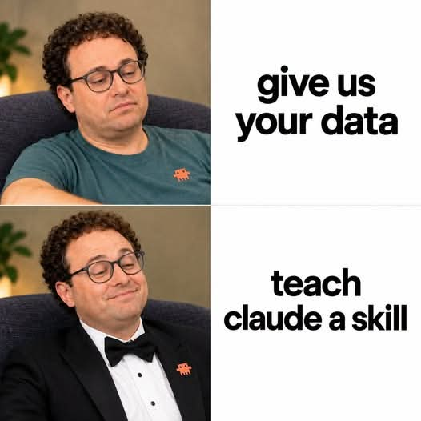

Tout est parti d'un simple mème...
Je suis tombé sur un mème qui opposait deux phrases :
- « Give us your data »
- « Teach Claude a skill »
Au départ, j'ai trouvé cela simplement ironique. Deux façons différentes de présenter notre relation avec l'intelligence artificielle.
Mais en y réfléchissant un peu plus, une question m'est venue : quelle est réellement la différence entre donner ses données à une IA et lui apprendre une compétence ?

Et là mon cerveau a commencé à faire des connexions. 😅
Je suis passé des données aux procédures métier, des procédures au savoir-faire des entreprises, puis aux connaissances locales qui ne sont pas nécessairement documentées ou disponibles sur Internet.
Je me suis finalement posé une question : à force de vouloir apprendre notre métier à l'IA pour qu'elle nous aide, sommes-nous conscients de tout ce que nous sommes progressivement en train de lui transmettre ?
Donner des données et transmettre un savoir-faire : est-ce la même chose ?
Je pense qu'il est important de distinguer ces deux notions.
Donner des données à un système d'IA, c'est lui fournir des informations qu'il pourra traiter dans le cadre d'une tâche : des documents, des tableaux, des exemples, des historiques ou encore des fichiers.
Mais lorsqu'on crée un Skill, par exemple, on va généralement plus loin que la simple transmission d'informations. On cherche à formaliser une manière de faire.
On peut y intégrer des instructions, des procédures, des règles métier, des exemples, des ressources et parfois des scripts. L'objectif est de guider le modèle pour qu'il puisse accomplir une tâche selon une méthode définie.
Prenons un exemple simple : une entreprise qui souhaite automatiser le traitement de ses commandes.
Elle pourrait transmettre à son système des exemples de commandes. Mais elle pourrait aussi lui expliquer comment reconnaître les informations importantes, quelles règles appliquer, comment gérer les cas particuliers et à quel moment demander une validation humaine.
Dans le premier cas, elle transmet principalement des informations. Dans le second, elle commence à formaliser une partie de son processus métier.
Et c'est précisément là que je trouve le sujet intéressant : nous ne transmettons plus seulement des informations, nous rendons progressivement notre manière de travailler exploitable par des systèmes d'IA.
Et si cette réflexion était encore plus importante pour les entreprises africaines ?
C'est en réfléchissant au contexte africain que j'ai trouvé cette question encore plus intéressante.
Nos entreprises ont des pratiques, des méthodes de gestion, des habitudes commerciales, des procédures et des réalités professionnelles qui leur sont propres.
Une partie de ces connaissances n'est pas nécessairement documentée. Elle peut être détenue par un responsable expérimenté, un collaborateur, un commerçant ou une personne qui a appris à gérer certaines situations au fil des années.
Prenons le cas d'une PME camerounaise. Elle peut avoir développé une manière particulière de gérer ses clients, de suivre ses paiements, de traiter les commandes ou de résoudre certains problèmes opérationnels.
Ces méthodes peuvent être très utiles à son activité, mais elles ne sont pas forcément présentes dans les données publiques accessibles sur Internet.
Pour adapter un système d'IA à ses réalités, cette entreprise devra donc progressivement lui apporter son contexte : ses documents, ses exemples, ses règles, ses corrections et parfois même des explications qui reposent sur des années d'expérience.
Autrement dit, pour rendre l'IA réellement utile dans nos environnements, nous devons aussi lui transmettre une partie de ce qui fait la particularité de nos organisations.
Une forme de collecte indirecte de connaissances ?
C'est ici que ma réflexion a pris une autre direction.
Lorsqu'une entreprise partage ses procédures, ses exemples de travail, ses règles métier et ses corrections pour améliorer un système d'IA, elle participe aussi à la formalisation de son propre savoir-faire.
Des connaissances qui étaient parfois détenues uniquement par quelques personnes deviennent des instructions, des documents ou des ressources structurées.
Cela peut être une excellente chose pour l'entreprise : elle peut mieux documenter ses processus, faciliter la transmission des connaissances et rendre certaines tâches plus reproductibles.
Mais une autre question apparaît : où sont stockées ces connaissances, qui peut y accéder et dans quelles conditions peuvent-elles être réutilisées ?
Il faut toutefois éviter de faire un raccourci technique. Créer un Skill pour un modèle comme Claude ne signifie pas automatiquement que le modèle est entraîné avec ce Skill ou que ses paramètres sont modifiés.
Un Skill sert principalement à fournir des instructions et des ressources que le système peut utiliser pour guider son comportement. La conservation des données, leur traitement et leur éventuelle réutilisation dépendent notamment de l'architecture choisie, du fournisseur, des paramètres et des conditions contractuelles.
La question n'est donc pas de supposer que chaque information transmise est automatiquement absorbée par un modèle. Elle est plutôt de comprendre ce que nous partageons, avec qui, où cela est conservé et qui en garde la maîtrise.
Le véritable enjeu : qui possède et valorise ce savoir-faire ?
À mon avis, les entreprises doivent commencer à se poser quelques questions avant de transformer leurs processus en ressources exploitables par des systèmes d'IA.
- Quelles connaissances métier pouvons-nous partager avec un système externe ?
- Quelles informations doivent rester confidentielles ?
- Où sont conservées nos procédures et nos ressources ?
- Qui contrôle leur accès et leur réutilisation ?
- Comment pouvons-nous conserver la maîtrise de notre propriété intellectuelle et de notre savoir-faire ?
Il ne s'agit pas de rejeter les outils d'IA. Au contraire, ils peuvent aider nos entreprises à mieux exploiter leurs connaissances et à améliorer leurs opérations.
Mais il serait dommage que les organisations investissent du temps pour structurer leur savoir-faire sans réfléchir à la manière dont elles pourront le conserver, le contrôler et en tirer de la valeur.
Du savoir-faire humain au capital technologique : un rapprochement avec Satya Nadella
En poursuivant cette réflexion, j'ai fait un rapprochement avec les idées de Satya Nadella autour du Human Capital, du Token Capital et de la Learning Loop.
Ce qui m'a particulièrement intéressé, c'est cette idée selon laquelle l'avenir des entreprises ne dépendra pas uniquement des modèles d'IA qu'elles utilisent, mais aussi de leur capacité à construire une boucle d'apprentissage dans laquelle le capital humain et le capital technologique se renforcent mutuellement.
Le Human Capital représente notamment les connaissances, l'expérience et les capacités des personnes. Le Token Capital renvoie à la capacité technologique construite autour de l'IA. Quant à la Learning Loop, elle représente cette dynamique d'apprentissage continu entre les humains et les systèmes d'IA.
Et là, j'ai commencé à voir un lien avec ma réflexion initiale.
Lorsque nous apprenons à une IA à comprendre nos procédures, nos méthodes de travail et nos règles métier, nous ne faisons pas que lui donner des instructions. Nous commençons aussi à structurer une partie de notre savoir-faire sous une forme exploitable par des systèmes technologiques.
Mais une question demeure : cette connaissance reste-t-elle réellement sous le contrôle de l'entreprise qui l'a produite ?
C'est peut-être là que se trouve l'un des enjeux majeurs pour nos entreprises africaines : ne pas simplement apprendre à utiliser l'IA, mais apprendre à transformer notre savoir-faire en capital technologique que nous sommes capables de maîtriser et de valoriser.
Apprendre à utiliser l'IA, sans perdre la maîtrise de notre savoir-faire
Au final, tout est parti d'un simple mème.
Je voulais simplement comprendre la différence entre donner des données à une IA et lui apprendre une compétence. Mais cette question m'a conduit à réfléchir aux procédures métier, au savoir-faire des entreprises, à la place des connaissances locales et à la maîtrise de notre capital technologique.
Je ne pense pas que les entreprises doivent arrêter de partager leurs connaissances avec les systèmes d'IA. Ce serait passer à côté de nombreuses possibilités.
Je pense plutôt qu'elles doivent apprendre à mieux structurer, protéger et valoriser ce qu'elles transmettent.
Et particulièrement dans nos environnements africains, où une partie du savoir-faire professionnel reste encore peu documentée ou peu numérisée.
Finalement, je reviens à ma question de départ :
À force d'apprendre notre métier à l'IA, que sommes-nous réellement en train de lui transmettre ?
Et surtout, serons-nous capables de conserver la maîtrise de cette connaissance et de la transformer en valeur pour nos propres entreprises ?
Note sur la rédaction : Cette réflexion est née de mes propres observations et questionnements. J'ai utilisé un outil d'intelligence artificielle comme assistant pour structurer, approfondir et améliorer la rédaction de cet article. Les idées, les interrogations et les orientations de cette réflexion restent les miennes.